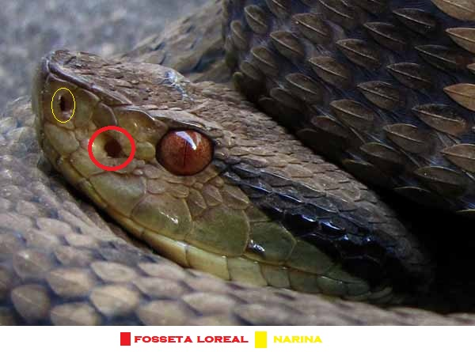
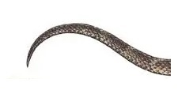
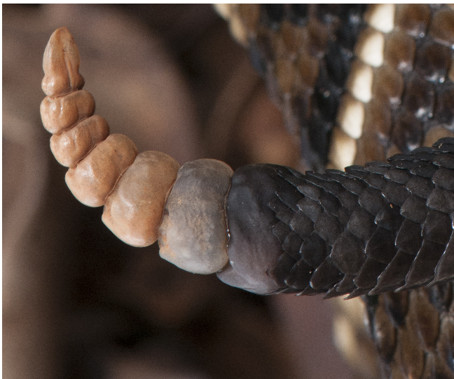
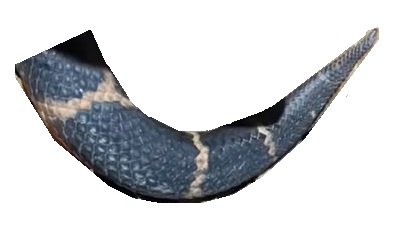
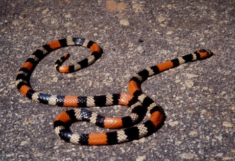
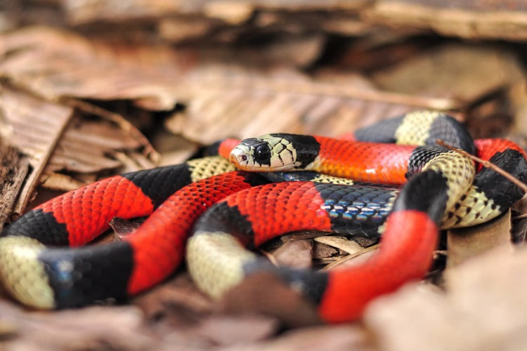

No Brasil existem aproximadamente 430 espécies de serpentes, mas apenas 76 são de importância médica. Dessas, 4 gêneros concentram praticamente todos os acidentes graves: Bothrops (jararaca), Crotalus (cascavel), Lachesis (surucucu) e Micrurus (coral verdadeira). Reconhecer o gênero agressor é o primeiro passo para escolher o soro correto, classificar a gravidade e prever as complicações — cada veneno tem um perfil clínico completamente diferente.
Ambos produzem toxinas, mas o mecanismo é diferente. O animal peçonhento precisa morder ou picar para inocular a toxina (serpentes, escorpiões, aranhas). O animal venenoso libera a toxina de forma passiva, quando manuseado ou ingerido (ex: sapos do gênero Bufo). As serpentes de importância médica no Brasil são todas peçonhentas.
A fosseta loreal é um órgão termorreceptor — um orifício situado entre o olho e a narina, exclusivo da subfamília Crotalinae (família Viperidae). Conectada ao olho por meio de um nervo óptico, essa estrutura funciona como uma "visão térmica", permitindo que a serpente detecte variações de temperatura de até 0,003 °C — essencial para localizar presas endotérmicas (roedores) no escuro.
A coral é peçonhenta (Elapidae, dentição proteróglifa), mas não possui fosseta loreal. Tem presas fixas, curtas (<3 mm) e um ângulo de abertura da boca limitado (<30°). Apesar disso, seu veneno é altamente neurotóxico — todo acidente elapídico é considerado potencialmente grave. Nunca use "ausência de fosseta" para descartar envenenamento.
Existem também as falsas-corais (ex: Erythrolamprus aesculapii, Oxyrhopus trigeminus), que imitam o padrão de anéis coloridos das corais verdadeiras, mas possuem dentição áglifa ou opistóglifa e não representam risco significativo.

A dentição determina como a toxina é inoculada e, portanto, a gravidade potencial do acidente. Serpentes são polifiodontes — substituem os dentes (inclusive as presas) ao longo de toda a vida.
| Tipo | Presas | Exemplos | Importância clínica |
|---|---|---|---|
| Áglifa | Sem presas especializadas; apenas glândulas salivares | Jiboia (Boa), sucuri (Eunectes) | Sem inoculação de veneno |
| Opistóglifa | Presas sulcadas na região posterior da maxila | Cobra-cipó (Philodryas olfersii), surucucu-do-pantanal (Hydrodynastes gigas) | Toxinas de efeito moderado; acidentes subnotificados |
| Proteróglifa | Presas fixas, curtas (<3 mm), sulcadas, região anterior | Coral verdadeira (Micrurus) | Altamente neurotóxico — todo caso é grave |
| Solenóglifa | Presas ocas, grandes, móveis — projetam-se no bote; até metade do comprimento da cabeça | Jararaca (Bothrops), cascavel (Crotalus), surucucu (Lachesis) | Maior volume de veneno — maioria dos acidentes graves |
Solenóglifa + fosseta loreal = Viperidae (Bothrops, Crotalus, Lachesis) → responsáveis por ~99% dos acidentes graves. Proteróglifa + sem fosseta = Elapidae (Micrurus) → acidentes raros, mas potencialmente fatais por insuficiência respiratória.
Quando a fosseta loreal está presente, a ponta da cauda permite diferenciar os 3 gêneros de Viperidae sem precisar abrir a boca do animal:



| Gênero | Família | Dentição | Fosseta | Cauda | Nome popular |
|---|---|---|---|---|---|
| Bothrops | Viperidae | Solenóglifa | Sim | Lisa | Jararaca, urutu, caiçaca |
| Crotalus | Viperidae | Solenóglifa | Sim | Guizo (chocalho) | Cascavel |
| Lachesis | Viperidae | Solenóglifa | Sim | Escamas eriçadas | Surucucu, pico-de-jaca |
| Micrurus | Elapidae | Proteróglifa | Não | Anéis coloridos em tríades | Coral verdadeira |
| Característica | Peçonhenta (Viperidae) | Não peçonhenta | Exceção: Micrurus |
|---|---|---|---|
| Fosseta loreal | Presente | Ausente | Ausente |
| Pupila | Em fenda (vertical) | Redonda | Redonda |
| Cabeça | Triangular, destacada do corpo | Arredondada, pouco destacada | Arredondada, pequena |
| Presas | Anteriores, grandes, móveis | Sem presas anteriores | Fixas, curtas, sulcadas |
| Cauda | Afina abruptamente | Afina progressivamente | Curta, com anéis |
| Escamas | Quilhadas (ásperas) | Lisas (brilhantes) | Lisas |
| Hábitos | Noturnos, lentas | Diurnos, ágeis | Semifossoriais |
As corais verdadeiras (Micrurus) possuem anéis completos (circundam todo o corpo) dispostos em tríades (3 anéis pretos intercalados por 2 brancos/amarelos, separados por anéis vermelhos longos). As falsas-corais geralmente têm anéis incompletos no ventre e padrão irregular. Porém, essa regra não é 100% confiável — a identificação definitiva requer análise da dentição.


Ao se sentir ameaçada, a coral pode enrodilhar a cauda e esconder a cabeça, permanecer imóvel, desferir botes curtos ou até se fingir de morta. Apesar do veneno altamente tóxico, acidentes com corais são raros pelas presas curtas, hábitos semifossoriais e boca pequena. Mas quando ocorrem, são emergências.
Na prática, a maioria dos pacientes chega ao PS sem o animal. O diagnóstico se baseia nas manifestações clínicas (dor, edema, coagulopatia, fácies neurotóxica) cruzadas com o contexto epidemiológico (região, atividade, horário, descrição do animal). Exames laboratoriais auxiliam na classificação de gravidade, mas não diagnosticam o tipo de acidente isoladamente.
Nenhuma das "regras" de identificação é absoluta — pupila e hábitos podem enganar, a coral quebra a regra da fosseta, e falsas-corais podem ter anéis completos em algumas espécies. O mais seguro é tratar o quadro clínico e, se possível, encaminhar o animal para identificação em centro de referência.
Ao concluir, sua barra de progresso no curso é atualizada.